Fundido (fade in)
Cuándo: la entrada más discreta; vale para casi todo.
Bloque 04 · Animaciones CSS
Cada capítulo lo presenta un personaje de una época y de una editorial distinta: de la Gotham de los años cuarenta a la Image Comics del siglo XXI, pasando por Watchmen, Vertigo y los 90. Aprenderás @keyframes y la propiedad animation desde cero, con ejemplos en vivo, retos y un catálogo de 145 animaciones listas para copiar.
Los capítulos siguen el orden en que estos personajes aparecieron por primera vez. Mientras aprendes animaciones, recorres más de sesenta años de cómic: la Edad de Oro, la de Bronce, la revolución de Watchmen y Vertigo, la explosión de Image en los 90 y el siglo XXI. Pulsa una ficha para ir a su capítulo.
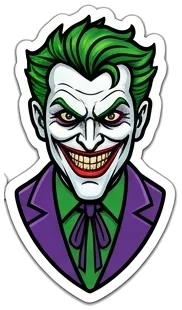
1940The JokerDC Comics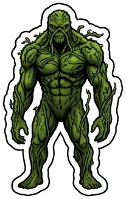
1971Swamp ThingDC Comics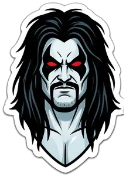
1983LoboDC Comics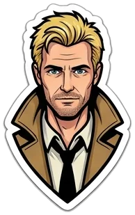
1985John ConstantineDC · Vertigo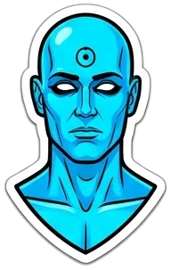
1986Doctor ManhattanDC · Watchmen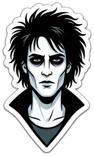
1989Dream (Sueño)DC · Vertigo · The Sandman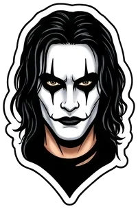
1989The Crow (Eric Draven)Caliber · Kitchen Sink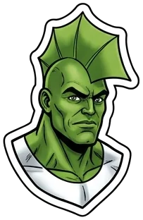
1992Savage DragonImage Comics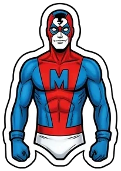
1992Madman (Frank Einstein)Tundra · Dark Horse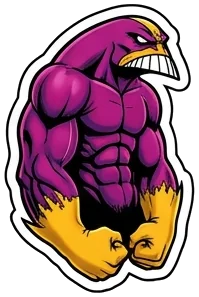
1993The MaxxImage Comics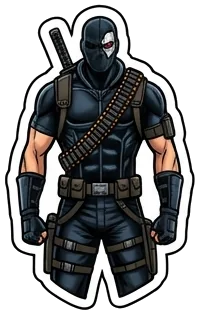
1993DeathblowImage · WildStorm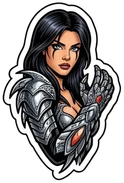
1995Witchblade (Sara Pezzini)Top Cow · Image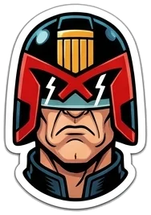
2000Judge Dredd2000 AD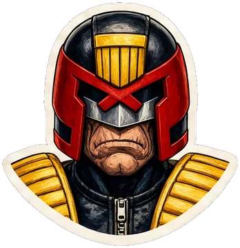
2000Judge Dredd2000 ADPresenta: Batman · DC Comics · 1939
Antes de salir a patrullar, reviso el equipo. Aquí harás lo mismo: para qué sirve animar una web, qué sabes ya del tercer bloque y en qué se diferencia una transición de una animación.
transform y transition.transition y animation.Una animación no es un adorno: es una forma de comunicar. En una buena web, cada movimiento responde a una de estas cuatro preguntas:
Si la animación no responde a ninguna de esas preguntas, sobra. Los textos largos que se mueven no se pueden leer, los bucles por todas partes cansan y las animaciones lentas hacen esperar. La regla de oro: que se note poco y ayude mucho.
En el tercer bloque aprendiste a mover y a suavizar. Lo vamos a usar todo el rato, así que aquí tienes un recordatorio rápido:
| Herramienta | Qué hace | Ejemplo |
|---|---|---|
| transform: translate() | mueve el elemento sin empujar a los demás | translateX(40px), translateY(-10px) |
| transform: rotate() | lo gira | rotate(45deg), rotate(-1turn) |
| transform: scale() | lo agranda o lo encoge | scale(1.2), scale(1, 0.5) |
| opacity | lo hace transparente | opacity: 0 invisible, 1 opaco |
| transition | suaviza el cambio entre dos estados | transition: transform 0.3s ease |
Imagina dos formas de mover a un personaje de dibujos animados:
| Pregunta | transition | animation |
|---|---|---|
| ¿Arranca sola? | No: necesita un cambio de estado | Sí: al cargar (o cuando tú digas) |
| ¿Cuántos pasos? | Dos: inicio y final | Todos los que quieras |
| ¿Se repite? | No | Sí: 2 veces, 10 o infinitas |
| ¿Dónde se escribe? | En el propio selector | En dos sitios: @keyframes y el selector |
| ¿Para qué es ideal? | Hover, foco, abrir y cerrar | Entradas, bucles, cargadores, efectos con varios pasos |
La caja verde solo se mueve si le pasas el ratón (transición). La rosa se mueve sola, sin parar (animación).
Las cuatro propiedades animation-… de la caja rosa las verás una a una en los próximos capítulos. Al final aprenderás a escribirlas todas en una sola línea.
/* … */ que explica qué hace.transition necesita un cambio de estado; animation se reproduce sola y puede tener muchos pasos.transform y opacity, que ya conoces.Presenta: The Joker · DC Comics · 1940
¿Sabes cuál es el secreto de una buena broma? Tú preparas el principio y el final… y el público se imagina todo lo de en medio. Las animaciones funcionan exactamente igual.
Una animación es una sucesión de imágenes que, pasadas muy deprisa, engañan al ojo y parecen movimiento. En los estudios de animación clásicos, el animador principal dibujaba las poses clave (el personaje agachado, el personaje en el aire, el personaje aterrizando) y los intercaladores dibujaban todos los dibujos de en medio.
En CSS funciona igual:
Si dices «al principio está a la izquierda y al final a la derecha», el navegador calcula todas las posiciones de en medio. Tú solo escribes dos líneas.
La línea verde que avanza es el «cabezal» de reproducción: entre punto y punto, los valores los inventa el navegador.
La pantalla se redibuja unas 60 veces por segundo (en algunas pantallas, 120). Una animación de 1 segundo son 60 imágenes. Si el navegador no tiene tiempo de calcular cada imagen, se salta alguna y el movimiento da tirones. En el capítulo 18 verás qué propiedades son «baratas» para que eso no pase.
Se puede interpolar todo lo que tenga un valor intermedio que tenga sentido:
| Tipo de valor | Ejemplos | ¿Suave? |
|---|---|---|
| números | opacity, z-index, flex-grow | Sí (z-index va de entero en entero) |
| medidas | width, padding, border-radius, font-size | Sí |
| colores | color, background-color, border-color | Sí: pasa por los colores de en medio |
| transformaciones | transform, translate, rotate, scale | Sí, y es lo más recomendable |
| sombras y filtros | box-shadow, filter, text-shadow | Sí (pero cuestan más) |
| palabras sueltas | border-style, font-family, display, visibility | No: cambian de golpe (por eso, para aparecer y desaparecer, se usa opacity) |
Aquí se animan border-radius y background-color. Fíjate cómo el navegador inventa todas las formas y todos los colores intermedios.
border-style se escribe con palabras (solid, dotted…): no existe un «medio punteado». El navegador no puede inventar valores intermedios, así que cambia de golpe justo a la mitad de la animación. Compáralo con border-radius, que es una medida y sí pasa por todos los valores intermedios.
border-style, display, visibility) cambian de golpe.Presenta: Swamp Thing · DC Comics · 1971
Las raíces crecen paso a paso, siguiendo un plan escrito en cada semilla. Un @keyframes es esa semilla: el guion de todo lo que va a ocurrir.
@keyframes y cómo se le pone nombre.from/to y porcentajes.subir, latir, girar-lento.caer-y-botar).none, initial, inherit).Latir y latir son dos guiones distintos.@keyframes se llaman igual, gana el último que aparece en el CSS.El porcentaje indica en qué momento de la animación ocurre el fotograma. 0% es el principio y 100% el final, sea cual sea la duración. from es lo mismo que 0% y to lo mismo que 100%. Si la animación dura 4 segundos:
El 0% y el 100% del farol son idénticos. Puedes escribirlos juntos separados por comas, igual que agrupas selectores. Menos código y menos errores:
Dentro de un fotograma puedes cambiar todas las propiedades que quieras. No hace falta que todos los fotogramas tengan las mismas: cada propiedad se interpola entre los fotogramas donde aparece.
Si no escribes el 0% o el 100%, el navegador los rellena con el estilo normal del elemento. Es un truco muy útil: con un solo fotograma al 50 % haces un latido completo.
@keyframe sin la s final: el navegador ignora todo el bloque.50 % con espacio: no es válido. Se escribe 50%, todo junto.120%): se ignora.@keyframes nombre { … } guarda el guion; por sí solo no hace nada.from = 0 %, to = 100 %.Presenta: Judge Dredd · 2000 AD · 1977
La ley es la ley: sin nombre y sin duración no hay animación. Dos propiedades obligatorias. Cúmplelas y circule.
animation-name y animation-duration.@keyframes (capítulo 03)..fantasma).animation-name: aparecer; (el mismo nombre, letra por letra).animation-duration: 2s;. Sin duración, la animación dura 0 segundos: ocurre, pero no la ves..fantasma tiene una animación.from (opacidad 0).to y la animación termina..fantasma). Aquí no se nota porque su estilo normal ya es opaco.Este fantasma cruza de izquierda a derecha… y al terminar, ¡salta de golpe al centro! Su estilo normal no tiene transform, así que vuelve a su sitio original.
Con animation-fill-mode: forwards, que verás en el capítulo 11. ¡Paciencia!
En cualquier parte de tu hoja de estilos: antes o después del selector, da igual. Por orden, lo habitual es ponerlo justo encima del selector que lo usa, o agrupar todos los @keyframes al final del archivo.
0s.@keyframes está mal escrito (@keyframe, 50 %, una llave sin cerrar).scale(0) a scale(1) en 0,6 segundos.animation-name (el guion) y animation-duration (cuánto dura).Presenta: Grendel (Hunter Rose) · Comico · Dark Horse · 1982
Una estocada dura lo justo, ni un instante más. Aprende a medir el tiempo de tus animaciones con la misma precisión.
s y ms.| Valor | Significa |
|---|---|
| 2s | 2 segundos |
| 0.5s · .5s | medio segundo (el cero de delante se puede omitir) |
| 300ms | 300 milisegundos = 0,3 segundos (1 s = 1000 ms) |
| 0s | el valor por defecto: no se ve nada |
animation-duration: 2 no es válido: falta la s. Y los tiempos negativos no existen para la duración.
No hay una regla exacta, pero estas cifras funcionan en casi todas las webs:
| Tipo de animación | Duración | Por qué |
|---|---|---|
| botón, hover, foco | 0,15 – 0,3 s | tiene que sentirse instantáneo |
| menús, avisos, ventanas | 0,25 – 0,5 s | se ve, pero no hace esperar |
| entradas de bloques | 0,5 – 0,9 s | da tiempo a seguir el movimiento |
| bucles decorativos | 2 – 10 s | lentos para que no distraigan |
| cargadores | 0,8 – 1,5 s por vuelta | parece activo sin agobiar |
Un elemento que recorre toda la pantalla necesita más tiempo que uno que se mueve 10 píxeles. Si un botón y un panel lateral duran lo mismo, el panel parecerá ir disparado.
800ms es lo mismo).s o ms, siempre con unidad.Presenta: Lobo · DC Comics · 1983
El tipo más duro del universo llega cuando le da la gana: a veces se hace esperar y a veces aparece a mitad de la pelea. Eso es el retraso.
animation-delay.Un retraso negativo no espera: la animación arranca al instante, pero como si ya llevara ese tiempo reproduciéndose. Con -0.5s en una animación de 1 s, empieza justo por la mitad. Sirve para que varios elementos con la misma animación no vayan sincronizados como soldados.
Mucha gente cree que animation-delay hace una pausa entre cada repetición. No es así: espera solo antes de la primera. Para que haya una pausa entre repeticiones, la pausa se mete dentro del @keyframes: el movimiento ocurre en una parte de la línea de tiempo y el resto se queda quieto.
El movimiento ocurre entre el 0 % y el 30 %; del 30 % al 100 % está quieto. Con 2 s de duración, suena 0,6 s y descansa 1,4 s.
animation-delay espera antes de la primera reproducción.@keyframes.Presenta: John Constantine · DC · Vertigo · 1985
Mismo bar, mismo cigarro, mismos errores, una y otra vez. Hay cosas que se repiten para siempre… y otras que deberían parar a la tercera.
animation-iteration-count.infinite y cuándo no.| Valor | Qué hace |
|---|---|
| 1 | una vez (el valor por defecto) |
| 3 | tres veces y se para |
| 1.5 | una vez y media: se queda parada a mitad de la segunda |
| infinite | para siempre |
| 0 | ninguna: no se reproduce |
Duración total = retraso + duración × repeticiones. Una animación de 0,5 s con 4 repeticiones y 1 s de retraso termina a los 1 + 0,5 × 4 = 3 segundos.
Un bucle infinito en mitad del contenido cansa y distrae. Úsalo en cosas pequeñas, decorativas o que indican un proceso (un cargador mientras carga). Para llamar la atención sobre un botón, mejor 2 o 3 repeticiones.
infinite. Por defecto, 1.infinite solo para lo decorativo o para indicar que algo está en marcha.Presenta: Rorschach · DC · Watchmen · 1986
Diario de Rorschach. Mi máscara es simétrica: lo que va hacia un lado vuelve hacia el otro. Hoy toca ir hacia delante, hacia atrás y alternando.
animation-direction.alternate.| Valor | Recorrido | Uso típico |
|---|---|---|
| normal | 0 → 100, 0 → 100… (salta al principio en cada vuelta) | giros, desfiles, cargadores |
| reverse | 100 → 0, 100 → 0… | reutilizar un guion al revés |
| alternate | 0 → 100, 100 → 0, 0 → 100… | flotar, respirar, péndulos |
| alternate-reverse | 100 → 0, 0 → 100… | lo mismo empezando por el final |
Con alternate, la ida cuenta como una repetición y la vuelta como otra. Si quieres «ir y volver una vez», necesitas animation-iteration-count: 2.
Si usas ease-in (arranca lento y acelera), al volver con alternate el navegador lo invierte: la vuelta arranca rápido y frena. Es lo natural en un péndulo o en algo que flota, y por eso alternate queda tan bien con ease-in-out.
Con alternate solo escribes la ida (from y to): la vuelta sale gratis. Sin él, tendrías que escribir tres fotogramas (0%, 50%, 100%).
from y to.normal, reverse, alternate, alternate-reverse.alternate, ida y vuelta son dos repeticiones y el ritmo se invierte al volver.Presenta: Doctor Manhattan · DC · Watchmen · 1986
Percibo todo el tiempo a la vez, y sé que no todos los instantes pesan igual: unos aceleran, otros frenan. Eso es el ritmo.
linear, ease, ease-in, ease-out, ease-in-out.cubic-bezier(), incluso con rebote.La duración dice cuánto tarda; la curva dice cómo reparte ese tiempo. Ya las usaste con transition en el tercer bloque: funcionan exactamente igual. En cada gráfica, el eje horizontal es el tiempo y el vertical el avance del movimiento:
| Curva | Cómo se siente | Úsala para |
|---|---|---|
| linear | velocidad constante, como una máquina | giros continuos, cargadores, desfiles |
| ease | arranca suave, va rápido y frena (por defecto) | cuando no sabes cuál poner |
| ease-in | arranca lento y acelera | salidas: algo que se va |
| ease-out | arranca rápido y frena | entradas: algo que llega |
| ease-in-out | suave al principio y al final | bucles de ida y vuelta, cosas que flotan |
Todas las curvas anteriores son atajos de cubic-bezier(x1, y1, x2, y2). Los cuatro números son dos «imanes» que doblan la línea recta:
x1, y1: el imán del principio. x2, y2: el imán del final.Por ejemplo, ease-out es cubic-bezier(0, 0, 0.58, 1). No hace falta memorizarlo: en DevTools, haz clic en el icono de curva que aparece junto a cualquier cubic-bezier y podrás arrastrar los imanes. También puedes usar la web cubic-bezier.com.
cubic-bezier(0.22, 1, 0.36, 1) (sale disparada y frena muy suave).cubic-bezier(0.34, 1.56, 0.64, 1).cubic-bezier(0.68, -0.6, 0.32, 1.6) (retrocede un poco, sale y se pasa).translateY(-60px) a 0). ¿Qué curva de las básicas le va mejor a una entrada?ease-out: lo que llega debe frenar al final, como alguien que se detiene delante de ti.
ease-out, salidas con ease-in, bucles con ease-in-out, giros con linear.cubic-bezier() crea curvas propias; con y > 1 hay rebote.Presenta: The Tick · New England Comics · 1988
¡CUCHARAAA! A veces la justicia no va suave: va a saltos. Paso, paso, paso. Hoy aprendes steps() y a cambiar el ritmo en mitad de la acción.
steps() y sus variantes.steps(5) divide el tramo en 5 saltos: el elemento se queda quieto y de pronto aparece en la siguiente posición. Es la base de los relojes, de la máquina de escribir (capítulo 16) y de los dibujos hechos con tiras de imágenes («sprites»).
| Valor | Qué hace |
|---|---|
| steps(4) | 4 saltos; el salto ocurre al final de cada trozo (igual que steps(4, jump-end)) |
| steps(4, jump-start) | 4 saltos; el primero ocurre nada más empezar |
| steps(4, jump-none) | 4 posiciones contando la de inicio y la de final (3 saltos) |
| step-start · step-end | un único salto al principio o al final |
Esto es lo más importante del capítulo: animation-timing-function no se aplica a la animación entera, sino a cada tramo entre dos fotogramas. Con tres fotogramas (0 %, 50 %, 100 %) hay dos tramos, y cada uno acelera y frena por su cuenta.
Además, puedes escribir animation-timing-function dentro de un fotograma: esa curva se usa desde ese fotograma hasta el siguiente. Así se consigue una pelota de verdad, que cae acelerando y sube frenando:
steps(n) mueve a saltos; step-end da un único salto al final.Presenta: The Crow (Eric Draven) · Caliber · Kitchen Sink · 1989
Lo que importa es lo que queda cuando todo termina. animation-fill-mode decide cómo se ve un elemento antes de empezar y después de acabar.
animation-fill-mode.both.forwards con :hover.Una animación tiene tres momentos: la espera (durante el retraso), la reproducción y el después (cuando termina). Durante la reproducción manda el @keyframes. Pero en la espera y en el después, por defecto, el elemento muestra su estilo normal. animation-fill-mode cambia eso:
| Valor | En la espera | Después |
|---|---|---|
| none | estilo normal | estilo normal (por defecto) |
| forwards | estilo normal | se queda con el último fotograma |
| backwards | ya muestra el primer fotograma | estilo normal |
| both | primer fotograma | último fotograma |
En la viñeta, las cuatro cajas esperan 1 segundo y luego cruzan de izquierda a derecha. Su estilo normal es estar en el centro y opacas. Pulsa ↻ Repetir y mira dos momentos: el primer segundo y el final.
Para las entradas usa both: así el elemento no se ve en su sitio mientras espera su turno y no salta al terminar. En el catálogo verás both en casi todas las entradas.
Con forwards el elemento parece quedarse en el último fotograma, pero la animación sigue «mandando» sobre esas propiedades. Si después intentas cambiar ese mismo transform con un :hover, no te hará caso. Solución: anima una propiedad y usa otra en el hover (por ejemplo, la entrada con translate y el hover con scale, capítulo 14).
forwards conserva el final; backwards aplica el inicio durante la espera; both hace las dos cosas.both. Cuidado al combinar forwards con un :hover sobre la misma propiedad.Presenta: Dream (Sueño) · DC · Vertigo · The Sandman · 1989
En el Sueño, el tiempo se detiene y continúa cuando yo lo decido. animation-play-state te da ese mismo poder.
running y paused.:has() y :checked.animation-play-state tiene dos valores: running (en marcha, el de por defecto) y paused (congelada). Al volver a running, la animación sigue desde el punto exacto donde se paró. Es distinto de quitar la animación (animation: none), que la reinicia desde cero.
En la página de selectores viste :checked (casilla marcada) y :has() (el padre que contiene algo). Juntos permiten que una casilla controle una animación. Además es accesible: se puede usar con el teclado.
paused congela; running reanuda desde el mismo punto.:hover o con :has(input:checked).Presenta: Lucifer Morningstar · DC · Vertigo · The Sandman · 1989
¿Ocho líneas para decir lo mismo? Qué poco elegante. La propiedad animation lo dice todo en una sola frase. Y puedes pedir varios deseos a la vez.
animation y la regla de los dos tiempos.| Propiedad larga | Ejemplo | Por defecto |
|---|---|---|
| animation-name | aparecer | none |
| animation-duration | 1s | 0s |
| animation-timing-function | ease-out | ease |
| animation-delay | 0.5s | 0s |
| animation-iteration-count | infinite | 1 |
| animation-direction | alternate | normal |
| animation-fill-mode | both | none |
| animation-play-state | running | running |
El orden recomendado es el de la tabla: animation: aparecer 1s ease-out 0.5s infinite alternate both running;. Todo lo que no escribas toma su valor por defecto, así que lo normal es escribir solo lo necesario: animation: aparecer 1s ease-out both;.
El primer tiempo es siempre la duración y el segundo, el retraso. animation: latir 2s 1s dura 2 s y espera 1 s. Con un solo tiempo, es la duración.
Separa las animaciones con comas. Cada una tiene sus propios valores. La combinación más habitual es una entrada (una vez) seguida de un bucle que empieza cuando acaba la entrada (su retraso es igual a la duración de la entrada):
Si las dos animaciones cambian transform, solo se ve la última de la lista. Por eso aquí una anima opacity y la otra transform. Si necesitas dos movimientos distintos, tienes dos soluciones: las propiedades individuales translate, rotate y scale (capítulo 14) o meter el elemento dentro de otro y animar cada caja.
animation-name: girar; animation-duration: 3s; animation-timing-function: linear; animation-iteration-count: infinite;animation: nombre duración ritmo retraso repeticiones dirección relleno estado;Presenta: Delirium · DC · Vertigo · The Sandman · 1990
Antes era Delight y ahora soy Delirium: cambio de forma, de color y de idea a cada momento. Aquí aprenderás a moverte y a deformarte como yo.
transform.transform-origin.translate, rotate y scale.Dentro de transform, las funciones se aplican de derecha a izquierda, y cada una cambia el «mundo» de la siguiente. rotate(90deg) translateX(100px) no es lo mismo que translateX(100px) rotate(90deg): en el primero, el elemento se desplaza en la dirección ya girada.
Para que el navegador interpole bien, escribe las mismas funciones en el mismo orden en todos los fotogramas: translateY(0) rotate(0) → translateY(-40px) rotate(10deg). Si en uno pones rotate primero y en otro después, el movimiento hará cosas raras.
Por defecto, un elemento gira y crece desde su centro. Con transform-origin eliges otro punto: top (cuelga de arriba), bottom (crece desde el suelo), left, 0 0 (esquina superior izquierda) o incluso un punto fuera del elemento (50% -60px, el gancho del farol del capítulo 03).
Desde hace unos años puedes escribir translate: 0 -20px;, rotate: 15deg; y scale: 1.2; como propiedades independientes, sin transform. La gran ventaja: dos animaciones distintas ya no se pisan. Una puede animar translate y otra rotate a la vez.
Los animadores clásicos descubrieron que un objeto que se aplasta al chocar y se estira al saltar parece vivo. En CSS se consigue con scale(ancho, alto): más ancho y más bajo al tocar el suelo, más estrecho y más alto en el aire. Truco: el volumen debe parecer el mismo (si ensanchas a 1.3, baja a unos 0.75).
translate y que, al pasar el ratón, crezca con scale (una transición). Como usan propiedades distintas, no se pisan.transform-origin elige el punto de giro y de crecimiento.translate, rotate y scale sueltas permiten combinar animaciones sin que se pisen.Presenta: Madman (Frank Einstein) · Tundra · Dark Horse · 1992
¡Todo empieza con un detonante! Un ratón que pasa, una casilla marcada, un enlace pulsado… Cada uno puede poner en marcha una animación.
animation-name.:hover, :focus-visible, :checked y :target.La regla es sencilla: una animación empieza en el momento en que un elemento pasa a tener un animation-name, y se reinicia si se lo quitan y se lo vuelven a poner. Si pones la animación dentro de un selector con pseudoclase, se reproducirá cada vez que esa pseudoclase empiece a cumplirse.
| Disparador | Cuándo se cumple | Ejemplo típico |
|---|---|---|
| (sin nada) | al cargar la página | entradas, bucles, cargadores |
| :hover | al pasar el ratón | iconos que saludan, botones que vibran |
| :focus-visible | al llegar con el teclado (Tab) | un anillo que late en el campo activo |
| :checked | casilla o radio marcados | «me gusta», interruptores, pestañas |
| :target | el elemento es el destino del enlace (#id) | resaltar la sección a la que saltas |
| una clase añadida con JavaScript | cuando JS la añade | animar al hacer scroll (lo verás en el bloque de JS) |
Haz clic en la viñeta y pulsa la tecla Tab para llegar al campo.
Pulsa el enlace: la caja de destino se resalta con una animación.
Si el efecto es simplemente «ir de A a B y volver» (crecer, cambiar de color), usa una transición: vuelve suave al quitar el ratón. Si tiene varios pasos (saludar, vibrar, rebotar), usa una animación. Ojo: al quitar el ratón, una animación se corta de golpe.
animation-name.:hover, :focus-visible, :checked, :target.Presenta: Savage Dragon · Image Comics · 1992
Hay golpes que nunca pasan de moda. Te enseño tres efectos clásicos que verás en cientos de webs, desmontados pieza a pieza.
steps() y la unidad ch.background-size y background-position.perspective, preserve-3d y backface-visibility.1ch.width: 0 y crece hasta tantos ch como caracteres tiene la frase (espacios y puntos incluidos).overflow: hidden esconde lo que aún no cabe y white-space: nowrap evita que salte de línea.steps() con tantos pasos como caracteres hace que salgan de uno en uno.border-right hace de cursor y una segunda animación lo hace parpadear.En el capítulo 18 verás que width es cara de animar. Aquí es aceptable: es un texto corto, va a saltos y ocurre una sola vez. Para textos largos, mejor letras en span (capítulo 17).
background-size: 400% 400%: solo se ve un trozo.background-position para pasear ese trozo visible de un lado a otro.perspective: es la distancia a la que miras. Sin ella, el giro 3D se ve plano.transform-style: preserve-3d para que sus caras vivan en 3D.backface-visibility: hidden no se ve la cara que da la espalda.Cambia la transición por una animación en la carta: @keyframes voltear { to { transform: rotateY(360deg); } } y animation: voltear 4s linear infinite;. Lo tienes en el catálogo.
width en ch + steps() + overflow: hidden.background-size: 400% + animar background-position.perspective + preserve-3d + backface-visibility.Presenta: Spawn · Image Comics · 1992
Mis cadenas no golpean todas a la vez: llegan una detrás de otra. Con una variable y una multiplicación, tus elementos harán lo mismo.
--i en el HTML.calc(var(--i) * 0.1s).style="--i: 0", style="--i: 1"…animation-delay: calc(var(--i) * 0.15s);calc(var(--i) * 0.15) no funciona: da un número sin unidad y la línea se ignora. Tiene que ser * 0.15s.
Para animar letras sueltas, cada una va en su span. Recuerda que transform no funciona en elementos en línea: los span necesitan display: inline-block.
Si multiplicas por un tiempo negativo, todos empiezan a la vez, pero cada uno en un punto distinto de la animación. Es perfecto para cosas que deben parecer naturales (estrellas, hojas, burbujas).
style="--i: n" en el HTML + calc(var(--i) * tiempo) en el CSS.both, los que esperan están invisibles.Presenta: Deathblow · Image · WildStorm · 1993
En una misión no sobra ni un movimiento. Algunas propiedades obligan al navegador a recalcular toda la página; otras salen casi gratis. Elige bien.
transform y opacity es lo mejor.width, top o left.will-change.Para dibujar cada fotograma, el navegador puede tener que hacer hasta tres trabajos:
Si animas width, height, top, left, margin o padding, el navegador repite los tres trabajos 60 veces por segundo. Si animas transform u opacity, solo compone: mueve un acetato ya dibujado.
| En vez de animar… | Anima… | Por qué |
|---|---|---|
| left · right | transform: translateX() o translate | no empuja a nadie |
| top · bottom · margin-top | transform: translateY() | igual |
| width · height | transform: scale() · scaleX() · scaleY() | no recoloca la página |
| display · visibility | opacity | se puede interpolar |
| box-shadow en bucle | opacity de un ::after que ya tiene la sombra | la sombra se pinta una vez |
La sombra se pinta una sola vez en un ::after; solo se anima su opacity.
will-change: transform le dice al navegador: «este elemento se va a mover, prepárale su propia capa». Puede eliminar algún tirón en animaciones complejas, pero cada capa gasta memoria.
* { will-change: transform; } empeora el rendimiento.transform, opacity), no all.En Chrome: F12 → menú de los tres puntos → More tools → Rendering → activa Paint flashing. Las zonas que se repintan se marcan en verde. Si al animar se pone verde toda la página, algo estás animando mal.
transform y opacity siempre que puedas.width, top, margin…).will-change solo donde haga falta.Presenta: The Maxx · Image Comics · 1993
En el Outback todo se transforma: los colores, las formas, la realidad. Con @property, hasta tus variables pueden transformarse suavemente.
@property.Una variable CSS normal (--angulo: 0deg) es, para el navegador, un simple texto: no sabe que es un ángulo, así que al animarla salta de golpe. Con @property le dices su tipo y entonces sí puede calcular los valores intermedios:
| Parte | Qué significa |
|---|---|
| @property --angulo | el nombre de la variable (con dos guiones) |
| syntax: '<angle>' | su tipo: <angle>, <number>, <integer>, <length>, <color>, <percentage>… |
| inherits: false | si los hijos heredan su valor |
| initial-value: 0deg | el valor de partida (obligatorio) |
Un efecto muy de moda en botones y tarjetas. El degradado cónico depende de --angulo y solo animamos esa variable.
Una variable de tipo <integer> pasa por todos los enteros y counter() la muestra como texto.
@property funciona en todos los navegadores actuales (Chrome, Edge, Safari y Firefox desde 2024). En uno antiguo, la variable no se animará, pero la página se verá bien igualmente.
@property, sí.syntax, inherits e initial-value.Presenta: Hellboy · Dark Horse · 1993
Mi trabajo es proteger a la gente. Y a algunas personas el movimiento les marea o les hace daño. Animar bien también es saber parar.
prefers-reduced-motion en toda la web y en cada animación.Ya la conoces de la página de responsive: el sistema operativo permite pedir «menos movimiento» y el CSS puede saberlo con @media (prefers-reduced-motion: reduce). Hay dos formas de respetarlo.
Más fina: en vez de quitarlo todo, sustituye el desplazamiento por un simple fundido. La información («algo ha aparecido») se mantiene sin marear.
En Chrome: F12 → tres puntos → More tools → Rendering → Emulate CSS media feature prefers-reduced-motion → reduce. En Windows también: Configuración → Accesibilidad → Efectos visuales → Efectos de animación.
Una luz que parpadea más de 3 veces por segundo puede provocar crisis a personas con epilepsia fotosensible. Nunca hagas destellos rápidos de pantalla completa ni parpadeos de colores muy contrastados (sobre todo rojo). Si tu animación parpadea, que sea lento: una vez por segundo como mucho.
Las pautas de accesibilidad (WCAG) piden que todo lo que se mueva solo durante más de 5 segundos (carruseles, cintas de noticias, fondos animados) se pueda pausar. Ya sabes hacerlo sin JavaScript: :hover o una casilla con :has(input:checked) (capítulo 12).
prefers-reduced-motion.Presenta: Witchblade (Sara Pezzini) · Top Cow · Image · 1995
Soy detective: la Witchblade me deja ver lo que otros no ven. Cuando una animación falla, hay que buscar pistas. Te enseño dónde mirar.
cubic-bezier o un ease para editarlo visualmente.| Síntoma | Causa probable | Solución |
|---|---|---|
| no se mueve nada | falta animation-duration | añade la duración (o el primer tiempo del atajo) |
| no se mueve nada | el nombre no coincide (mayúsculas, guiones) | copia y pega el nombre |
| no se mueve nada | @keyframe sin s, 50 % con espacio, llave sin cerrar | revisa la sintaxis del guion |
| un span no se mueve | es un elemento en línea | display: inline-block |
| salta al terminar | vuelve a su estilo normal | animation-fill-mode: forwards o both |
| se ve antes de entrar | durante el retraso muestra su estilo normal | backwards o both |
| una de dos animaciones no se ve | las dos animan la misma propiedad | propiedades distintas o translate/rotate/scale sueltas |
| el hover no funciona tras la animación | forwards sigue mandando | usa otra propiedad en el hover |
| va a tirones | animas width, top, margin… | cámbialo por transform |
| gira «raro» | el punto de giro no es el que crees | revisa transform-origin |
| el escalonado no funciona | falta la unidad en calc() | calc(var(--i) * 0.1s) |
| la variable salta de golpe | no está registrada | @property |
animation se aplica (no está tachada).@keyframes.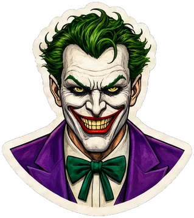
Presenta: The Joker · DC Comics · versión pintada
¡Bienvenido a mi laboratorio! Aquí no hay reglas: toca todas las perillas y mira qué pasa. Cuando algo te guste, llévatelo.
steps(5).cubic-bezier y mira el rebote.Presenta: Invincible · Image Comics · 2003
¡Último capítulo! Vamos a construir juntos una portada animada completa, paso a paso, con todo lo que has aprendido.
Primero la estructura, sin animaciones. Cada pieza que entra en cascada lleva su número --i, y las decoraciones llevan aria-hidden="true" porque no aportan información.
Un solo @keyframes llamado entrar sirve para las tres piezas: aparecen y suben. El retraso de cada una sale de calc(var(--i) * 0.2s) y todas llevan both.
El botón tiene dos animaciones: la entrada (como las demás) y un latido infinito que empieza cuando la entrada termina. Para que no se pisen, la entrada usa translate y el latido scale (capítulo 14).
Las onomatopeyas usan un guion flotar con alternate, y un retraso negativo distinto para que no se muevan a la vez.
Al final, el bloque prefers-reduced-motion quita la decoración y el latido, y deja solo un fundido en la entrada.
@keyframes reutilizado, both, retraso calculado con --i.translate y scale).alternate.prefers-reduced-motion.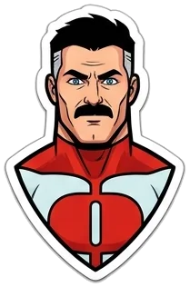
Presenta: Omni-Man · Image Comics · 2003
Ciento cuarenta y cinco técnicas probadas en combate, de las que se usan hoy en webs reales. Cada una con su demostración, su HTML y su CSS comentado. Elige, copia y adáptala a tu proyecto.
Aquí tienes 140 animaciones de las que se usan hoy en webs reales: entradas, botones, cargadores, tarjetas, menús, textos, fondos… y una familia de animaciones divertidas para cuando quieras jugar. Tienen un estilo neutro de web moderna para que encajen en cualquier proyecto.
@keyframes con el mismo nombre, cámbialo en los dos sitios.prefers-reduced-motion del capítulo 20 al final de tu CSS.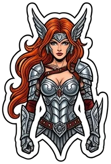
Cómo aparece algo en pantalla. Se reproducen una vez y casi todas usan both. Úsalas en tarjetas, secciones, ventanas o avisos. Para que entren al hacer scroll necesitarás JavaScript (bloque 8) o animation-timeline (bloque 6).
Cuándo: la entrada más discreta; vale para casi todo.
Cuándo: la entrada estrella de tarjetas, títulos y bloques de texto.
Cuándo: menús desplegables, avisos que caen desde arriba.
Cuándo: paneles laterales, elementos de una línea de tiempo.
Cuándo: imágenes junto a un texto, notificaciones laterales.
Cuándo: ventanas modales, imágenes ampliadas, iconos.
Cuándo: titulares de portada; parece que el elemento «cae» sobre la página.
Cuándo: premios, logros, iconos que quieres celebrar.
Cuándo: avisos llamativos, elementos de juegos.
Cuándo: tarjetas que suben desde el fondo; muy elegante.
Cuándo: fichas, resultados de un juego, tarjetas de precio.
Cuándo: como el anterior, girando sobre el eje vertical.
Cuándo: iconos, logotipos, sellos.
Cuándo: pelotas, botones redondos, elementos divertidos.
Cuándo: titulares con energía, banners de oferta.
Cuándo: titulares de portada con aire cinematográfico.
Cuándo: imágenes destacadas, transiciones de portada.
Cuándo: bloques de texto o imágenes que se descubren de lado a lado.
Cuándo: tarjetas de producto, carteles.
Cuándo: barras, líneas decorativas, menús que se despliegan.
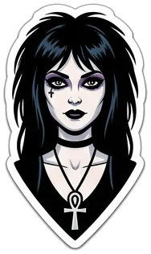
Cómo desaparece algo: un aviso que se cierra, un elemento que se borra. Usan forwards o both para quedarse invisibles al terminar. Las salidas suelen ir con ease-in (arrancan lento y aceleran al irse).
Cuándo: la salida más discreta.
Cuándo: notificaciones que se cierran.
Cuándo: cerrar una ventana modal.
Cuándo: descartar una tarjeta, borrar un elemento de una lista.
Cuándo: eliminar algo con un toque divertido.
Cuándo: páginas de error 404, efectos de humor.
Movimientos cortos para señalar algo. Aquí se repiten para que los veas, pero en una web real lánzalos una vez o pocas (animation-iteration-count: 2) o solo al pasar el ratón.
Cuándo: una flecha que invita a bajar, un icono nuevo.
Cuándo: algo que acaba de cambiar o de actualizarse.
Cuándo: el botón principal de una página, un aviso pendiente.
Cuándo: confirmar una acción con gracia.
Cuándo: contraseña incorrecta, campo con error.
Cuándo: algo que «vibra» por un aviso urgente.
Cuándo: un «no» más suave que el temblor.
Cuándo: carteles colgados, etiquetas de precio.
Cuándo: celebrar un logro, una compra terminada.
Cuándo: algo que «duda» o un efecto cómico.
Cuándo: botones juguetones, iconos de apps infantiles.
Cuándo: botones de favoritos, donaciones.
Cuándo: punto de «nuevo», ubicación en un mapa, usuario en línea.
Cuándo: el botón más importante; un aura que se enciende y apaga.
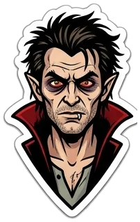
Los efectos de botón más usados. Muchos se activan con :hover (pasa el ratón por la viñeta). Recuerda: si el efecto es «ir de A a B», se hace con transition; si tiene varios pasos o se repite, con animation. Aquí tienes de los dos.
Cuándo: casi cualquier botón; sube y su sombra crece.
Cuándo: botones con borde que se rellenan de color de lado a lado.
Cuándo: llamar la atención sobre un botón de compra sin molestar.
Cuándo: todos los botones; da la sensación de botón físico.
Cuándo: «Siguiente», «Ver más», «Empezar».
Cuándo: botones de registro o de portada con mucho color.
Cuándo: botones fantasma (sin relleno) elegantes.
Cuándo: botones de juegos o de webs infantiles.
Cuándo: «Recargar», «Ajustes», «Sincronizar».
Cuándo: botones con un mensaje alternativo («Seguir» → «¡Vamos!»).
Cuándo: botones con personalidad.
Cuándo: webs oscuras, videojuegos, música.
Cuándo: mientras se envía un formulario.
Cuándo: estilo Material Design: una onda que sale al pulsar.
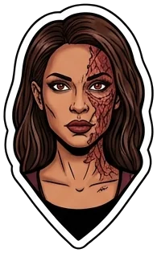
Pequeños detalles que hacen que un menú o un texto con enlaces parezca cuidado. Pasa el ratón por los enlaces.
Cuándo: el menú de navegación más habitual.
Cuándo: menús centrados, títulos.
Cuándo: un detalle muy pulido para menús.
Cuándo: destacar palabras clave en un texto.
Cuándo: tareas completadas, precios antiguos.
Cuándo: «Leer más» al final de una tarjeta.
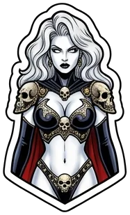
Efectos para tarjetas de producto, galerías y portfolios. Las «imágenes» de los ejemplos son degradados para no depender de archivos: en tu web pondrás una <img> con las mismas clases.
Cuándo: rejillas de productos, artículos o proyectos.
Cuándo: galerías: la imagen crece pero no se sale.
Cuándo: portfolios: al pasar el ratón aparece el título del proyecto.
Cuándo: mostrar las dos caras de algo (anverso y reverso de una carta).
Cuándo: tarjetas de producto «premium».
Cuándo: destacar un plan de precios, una tarjeta especial. Usa @property (capítulo 19).
Cuándo: logos de clientes, equipos, galerías.
Cuándo: imágenes de portada que parecen vídeo.
Cuándo: tarjetas de regalo, carnés, productos brillantes.
Cuándo: mostrar una colección (cartas, fotos, productos).
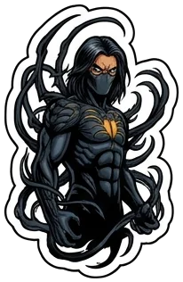
Mientras algo carga, un movimiento sencillo en bucle dice «sigo trabajando». Ponles role="status" y un aria-label para que los lectores de pantalla anuncien «Cargando».
Cuándo: el cargador universal.
Cuándo: una variante más vistosa del anterior.
Cuándo: cargas cortas, botones, chats.
Cuándo: la versión más discreta de los puntos.
Cuándo: música, audio, «escuchando».
Cuándo: cargas de fondo, estado «conectando».
Cuándo: búsqueda en curso, radar, «buscando dispositivos».
Cuándo: un cargador con aire 3D.
Cuándo: cuando no sabes cuánto falta.
Cuándo: subidas de archivos, instalaciones.
Cuándo: el hueco del contenido mientras carga; lo usan casi todas las apps.
Cuándo: un anillo con estela de color degradado, muy actual.
Cuándo: cargas de apps espaciales, tecnológicas.
Cuándo: «La otra persona está escribiendo» en un chat.
Cuándo: esperas largas; gira y descansa.
Cuándo: textos de espera; los puntos aparecen uno a uno.
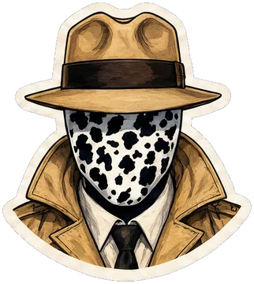
Titulares que llaman la atención. Úsalos en textos cortos: un párrafo animado no se puede leer.
Cuándo: titulares de portada, terminales, frases de bienvenida.
Cuándo: titulares de webs tecnológicas y creativas.
Cuándo: webs de videojuegos, tecnología, ciencia ficción.
Cuándo: letreros de bares, música, noche.
Cuándo: titulares divertidos, saludos.
Cuándo: titulares elegantes de portada (muy usado en webs de diseño).
Cuándo: «Hacemos webs / apps / tiendas»: una palabra cambia sola.
Cuándo: eslóganes que aparecen palabra a palabra.
Cuándo: títulos con estilo retro.
Cuándo: destacar una frase clave al cargar.
Cuándo: estadísticas («+1200 clientes»). Usa @property.
Cuándo: firmas, logotipos, portadas artísticas.
Cuándo: títulos de juegos, anuncios divertidos.
Cuándo: titulares minimalistas y de lujo.
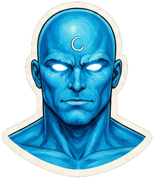
Movimientos lentos para dar vida a una portada o a una sección. Recuerda: lentos, decorativos y con aria-hidden="true" si no aportan información.
Cuándo: fondos de portada, banners.
Cuándo: fondos modernos de webs de producto (muy de moda).
Cuándo: webs de bebidas, acuarios, temas marinos.
Cuándo: fondos nocturnos, webs de astronomía.
Cuándo: estética retro de videojuego o tecnológica.
Cuándo: zonas «en construcción», avisos, fondos dinámicos.
Cuándo: fondos de premios, ofertas, estilo cómic.
Cuándo: decoración orgánica detrás de una foto o un título.
Cuándo: separador entre secciones, webs de playa o surf.
Cuándo: celebraciones: compra completada, cumpleaños.
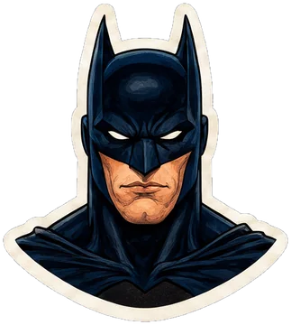
Animaciones pequeñas que explican lo que pasa: «se ha abierto», «se ha guardado», «tienes un mensaje». Muchas usan casillas (:checked) para funcionar sin JavaScript: haz clic en ellas.
Cuándo: el botón de menú del móvil. Haz clic.
Cuándo: ajustes de sí/no, modo oscuro. Haz clic.
Cuándo: listas de tareas, aceptar condiciones. Haz clic.
Cuándo: «Guardado», «Enviado», «Error de conexión».
Cuándo: confirmaciones, formularios rápidos. Usa :target: pulsa «Abrir».
Cuándo: submenús. Pasa el ratón por «Menú».
Cuándo: preguntas frecuentes. Haz clic en la pregunta.
Cuándo: explicar un icono. Pasa el ratón por el «?».
Cuándo: carrito de la compra, mensajes nuevos.
Cuándo: icono de notificaciones con avisos pendientes.
Cuándo: al final de una portada a pantalla completa.
Cuándo: favoritos, reacciones. Haz clic en el corazón.
Cuándo: puntuar productos. Pasa el ratón por las estrellas.
Cuándo: al copiar un código o un enlace. Haz clic en el botón.
Cuándo: pestañas de secciones. Haz clic en ellas.
Cuándo: «Paso 1 de 3» en una compra o un registro.
Para jugar, para webs infantiles, para páginas 404 o simplemente para practicar. Aquí se combinan muchas técnicas a la vez: léelas despacio.
Técnicas: ritmo por fotograma y «estirar y encoger».
Técnicas: temblor previo y salida acelerada en un solo guion.
Técnicas: dos animaciones en elementos distintos con el mismo ritmo.
Técnicas: dos animaciones sobre propiedades distintas.
Técnicas: pausa dentro del @keyframes y scaleY.
Técnicas: retraso largo dentro del guion, rebote con cubic-bezier.
Técnicas: 3D con rotateY y dos caras.
Técnicas: seis caras colocadas con rotate + translateZ.
Técnicas: transform-origin abajo y varias propiedades a la vez.
Técnicas: muchas gotas con la misma animación y variables propias.
Técnicas: caída con vaivén usando dos propiedades sueltas (translate y rotate).
Técnicas: latido + anillos con ::before y ::after.
Técnicas: estirar y encoger mientras avanza.
Técnicas: franjas con la misma animación y retrasos escalonados.
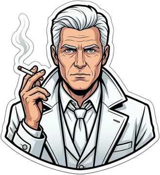
Soy arqueólogo de lo imposible y tengo más de un siglo: sé bien que la historia no tiene principio ni final, solo un bucle que se repite. Un buen carrusel es igual: las imágenes salen por un lado, entran por el otro y nadie debe notar cuándo vuelve a empezar.
Un carrusel es una tira más ancha que su marco (overflow: hidden) que se desplaza con translateX. Cuando la animación termina, vuelve al 0% de golpe. Si la tira no ha avanzado exactamente lo que mide su contenido, la vuelta se ve como un salto. Pasa por tres motivos:
gap: con 10 tarjetas hay 9 huecos, no 10. La mitad de la tira no es exactamente una vuelta y se pierde medio hueco en cada ciclo.aria-hidden="true" para que el lector de pantalla no lo lea dos veces.width: max-content.gap en la tira: separa las tarjetas con margin-right (o padding) en cada una. Así cada grupo mide exactamente la mitad de la tira, con su último hueco incluido.-50% con linear e infinite. Al llegar al final, el segundo grupo ocupa exactamente el sitio donde empezó el primero: el salto existe, pero es invisible.Cuándo: galerías de imágenes, testimonios, portadas. Fíjate en que nunca se nota la vuelta.
Cuándo: para entender el fallo. Este usa gap: mira la vuelta y verás un tirón cada 6 segundos.
Cuándo: «Confían en nosotros», patrocinadores, clientes. Se para al pasar el ratón para poder mirar.
Cuándo: portfolios y portadas con mucho movimiento: una fila va a la izquierda y la otra a la derecha.
Cuándo: listas de noticias, comentarios o resultados que suben sin fin.
Cambia cada .foto por <img src="..." alt="..." width="140" height="100"> con las mismas medidas y object-fit: cover (bloque 3). Y recuerda: si el carrusel se mueve solo más de 5 segundos, debe poder pausarse (capítulo 20). Con prefers-reduced-motion, quita la animación y deja la tira con overflow-x: auto para que se pueda desplazar a mano.
No hay ninguna animación con ese nombre. Prueba con otra palabra.
Presenta: Judge Dredd · 2000 AD · versión pintada
Todas las preguntas de la página, juntas. Cada respuesta se corrige al momento y trae su explicación. Con un 80 % de aciertos, el tribunal te declara apto.